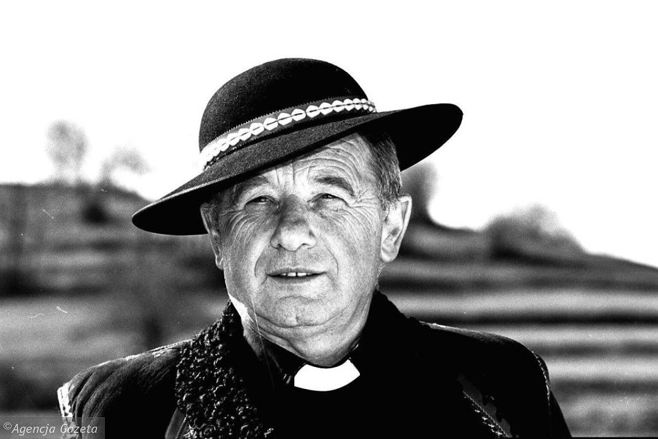

Oferta edukacyjna
Kompleksowe wsparcie na każdym etapie życia – od wczesnego dzieciństwa po dorosłość
Zespół Szkół Nr 26 w Toruniu oferuje szeroki zakres form wsparcia edukacyjnego i terapeutycznego dla dzieci, młodzieży i dorosłych z niepełnosprawnością intelektualną. Każdy program dostosowany jest do indywidualnych potrzeb i możliwości uczestnika.
Wczesne Wspomaganie Rozwoju Dziecka
Dla dzieci od urodzenia do podjęcia nauki w szkole
Wczesne wspomaganie rozwoju (WWR) to bezpłatna, wielospecjalistyczna pomoc dla dzieci z niepełnosprawnością lub zagrożonych nieprawidłowym rozwojem oraz ich rodzin. Celem jest pobudzanie psychoruchowego i społecznego funkcjonowania dziecka od najwcześniejszego etapu życia. Prowadzone jest na podstawie Rozporządzenia MEN z 24 sierpnia 2017 r. Wymiar zajęć wynosi od 4 do 8 godzin miesięcznie.
Specjaliści prowadzący zajęcia
Sfery objęte wsparciem
Oddziały Przedszkolne
„Czerwone jabłuszko" – dla dzieci w wieku 3–9 lat
Nasze oddziały przedszkolne funkcjonują pod nazwą „Czerwone jabłuszko" – nawiązując do koloru jabłka z logo szkoły. Działamy w pięciu grupach: trzech ośmiogodzinnych i dwóch pięciogodzinnych. Do oddziałów przyjmowane są dzieci od 3 roku życia posiadające orzeczenie o potrzebie kształcenia specjalnego z uwagi na niepełnosprawność intelektualną w stopniu umiarkowanym lub znacznym albo niepełnosprawności sprzężone. Każdy oddział liczy od 3 do 5 dzieci.
Nasze grupy
🐝
Pszczółki
🐞
Biedronki
🦋
Motylki
🐸
Żabki
🐜
Mrówki
Zajęcia specjalistyczne
Szkoła Podstawowa Specjalna Nr 26
im. ks. prof. Józefa Tischnera
Dla uczniów w wieku 7–20 lat
Szkoła Podstawowa Specjalna realizuje podstawę programową dostosowaną do możliwości uczniów z niepełnosprawnością intelektualną w stopniu umiarkowanym lub znacznym, a także z niepełnosprawnościami sprzężonymi. Nacisk kładziony jest na rozwijanie samodzielności i umiejętności niezbędnych w codziennym życiu. Klasy liczą maksymalnie 4 uczniów. Dla każdego ucznia opracowywany jest Indywidualny Program Edukacyjno-Terapeutyczny (IPET).
Realizowane przedmioty i obszary
Specjalistyczne wsparcie

Patron szkoły
ks. prof. Józef Tischner
Wybitny polski filozof i kapłan, twórca filozofii spotkania i dialogu. Patron naszych szkół – SPS Nr 26 i SPdP Nr 26.
Zajęcia Rewalidacyjno-Wychowawcze
Dla dzieci i młodzieży z głęboką niepełnosprawnością intelektualną (3–25 lat)
Zajęcia rewalidacyjno-wychowawcze (ZRW) skierowane są do dzieci i młodzieży z niepełnosprawnością intelektualną w stopniu głębokim. Prowadzone są w formie grupowej (2–4 uczestników, 20 godzin tygodniowo + 3 godziny zajęć rewalidacyjnych + 2 godziny religii) oraz indywidualnej (10 godzin tygodniowo, w szkole lub w miejscu zamieszkania uczestnika).
Metody i formy pracy
Szkoła Przysposabiająca do Pracy Nr 26
im. ks. prof. Józefa Tischnera
Dla absolwentów szkoły podstawowej – do 24 roku życia
Szkoła przysposabiająca do pracy (SPdP) to 3-letni cykl kształcenia dla uczniów z niepełnosprawnością intelektualną w stopniu umiarkowanym lub znacznym oraz z niepełnosprawnościami sprzężonymi. Celem jest przygotowanie do możliwie samodzielnego życia, aktywności społecznej i podjęcia pracy. Dla każdego ucznia opracowywany jest IPET.
Realizowane przedmioty i obszary
Pracownie i praktyki zawodowe
Co po ukończeniu szkoły?
Absolwenci podejmują pracę pomocniczą na otwartym rynku pracy z trenerem pracy lub kontynuują aktywność w Warsztatach Terapii Zajęciowej (WTZ).
Patron szkoły
ks. prof. Józef Tischner
Wybitny polski filozof i kapłan, twórca filozofii spotkania i dialogu. Patron naszych szkół – SPS Nr 26 i SPdP Nr 26.
Rehabilitacja 25+
Dla dorosłych osób z niepełnosprawnością intelektualną po 25 roku życia
Program Rehabilitacja 25+ realizowany jest w ramach pilotażu finansowanego przez PFRON. Skierowany jest do dorosłych z niepełnosprawnością intelektualną, które zakończyły edukację szkolną. Celem jest podtrzymanie i rozwijanie nabytych umiejętności, zapobieganie regresji oraz wspieranie aktywności społecznej. Zajęcia prowadzone są w małych grupach.
Zakres zajęć
Zainteresowany którymś z programów?
Rekrutacja do naszej szkoły prowadzona jest przez cały rok. Skontaktuj się z sekretariatem.